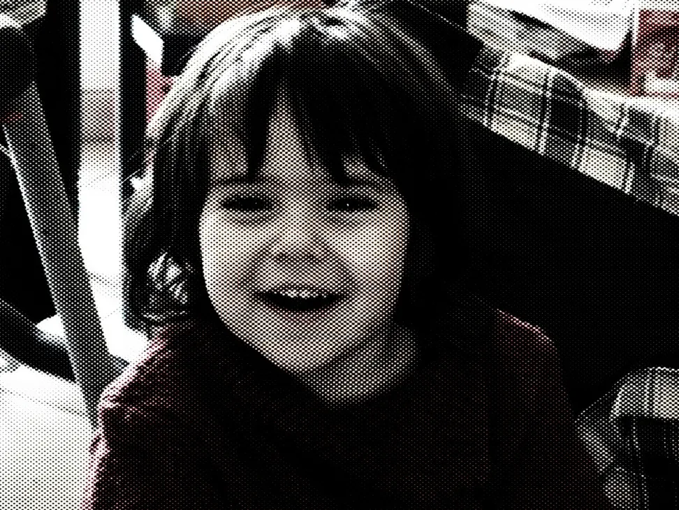

Manon Sanchez

Portfolio de Manon Sanchez
2026
Mes projets
À propos
Je m'appelle Manon Sanchez et je suis étudiante en troisième année de BUT MMI (Métiers du Multimédia et de l'Internet).
J'aime donner vie à des projets. Tout commence par le prototype : c'est là que je réfléchis à ce qu'il y a derrière, en m'appuyant sur la psychologie humaine, un sujet qui me passionne.
Vient ensuite la réalisation, et ce que je préfère : voir le projet prendre forme.
Je travaille principalement avec la suite Adobe.
Contact
Je recherche un stage en publicité, création et/ou marketing, du 8 février au 14 mai 2027, à Paris ou en Île-de-France.
- Téléphone
- 06 44 82 08 84
- Manon Sanchez ↗
- CV